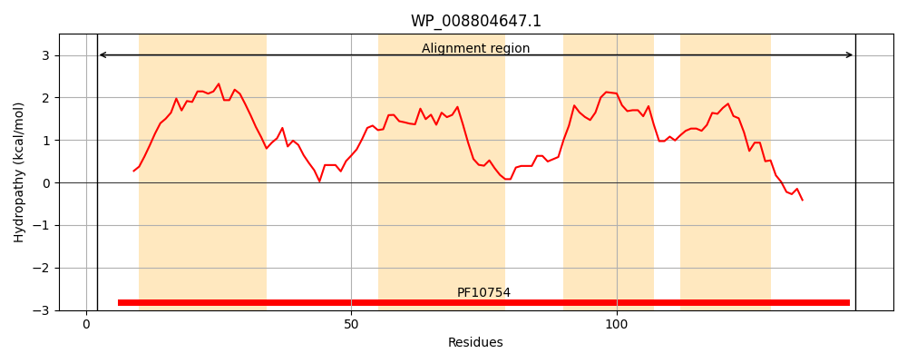
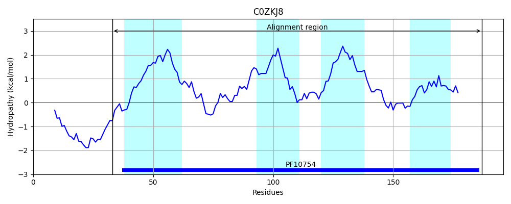
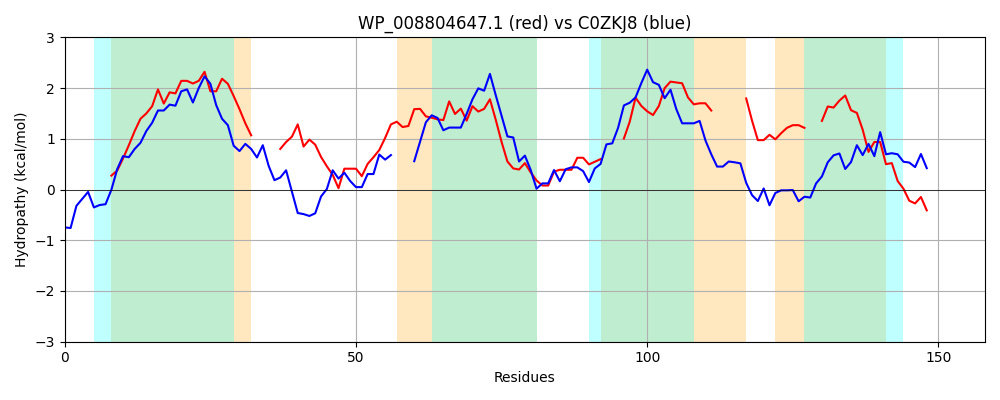

Hit Accession: C0ZKJ8
Hit TCID: 9.B.363.2.1
Hit Description: gnl|BL_ORD_ID|2335 gnl|TC-DB|C0ZKJ8|9.B.363.2.1 Hypothetical membrane protein OS=Brevibacillus brevis (strain 47 / JCM 6285 / NBRC 100599) OX=358681 GN=BBR47_46980 PE=4 SV=1
Mach Len: 158
e:0.000006
Query TMS Count : 4
Hit TMS Count: 4
TMS-Overlap Score: 3.100000
Predicted Substrates:None
BLAST Alignment:
Score: 101 , Bit scores: 43 bits, E-value: 5.9e-06, Alignment length: 158, Percentage identity: 24
Query: 2 TSQSAERIGGWLLAPLAWLLVALLSASLSLLFF----ANALMSTQTYALLRAMSTGHLALWLASLLFAVAMWYYTLWLTIAFFKRRSLVPKHY---IIWLLITLLLAIKAFA-----FSPVSDVLALR--QLLFPLLAAALLAPYFRRSQRVKRTFVH 145
T + + +GGWL+ P ++++ S S++ A A+ Q + + T + + ++L + + ++L L + +F+++ P + I++ LI ++ + A+A F S ++ +LL + A + PYFR S RVK TFV+
Sbjct: 33 TVKKPKGLGGWLIWPTIMVVLSPFSVLASIIGIFQDHAEAMEGLQPFMEQSLLFTLY---YYGNILLEIGLLAFSLTLLVFYFQKKKRAPHLFVGLILFYLILNMIDLLAWASFDSLFGDTSQLVKQSGLRLLQTGITAMIWIPYFRLSIRVKNTFVN 187 | Protein Hydropathy Plots: |
|---|
|  |  |
Pairwise Alignment-Hydropathy Plot:
|
|---|
|  |